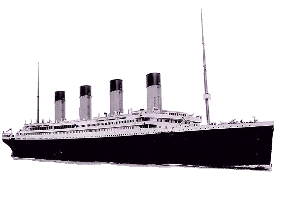

Many thanks to Earl Chapman of Montreal, Canada, for allowing me to post his daily Titanic chronology. This gives a chronology of events in the days leading up to the maiden voyage, and the fateful collision with the iceberg.
Friday, April 5, 1912
It’s Good Friday and the Titanic, the pride of the White Star Line, is “dressed” overall with flags and pennants for a salute to the people of Southampton. It is the only occasion she is ever “dressed”. The Titanic had arrived in the port of Southampton just after midnight to begin provisioning and staffing for her maiden voyage.
Earl Chapman
Saturday, April 6, 1912
Recruitment day for the majority of the crew. General cargo begins to arrive. The final cargo totals almost 560 tons and includes 11,524 individual pieces. Union halls and the White Star Line’s hiring hall were jammed. Hundreds signed on from the British Seafarers’ Union and the National Sailors’ and Firemen’s Union, all anxious to get back to work (the coal strike had caused widespread unemployment among Southampton’s sailors). The fact that Titanic was brand new and commanded by Edward J. Smith certainly did not hurt although some seamen were undoubtedly deterred by the upcoming maiden voyage. While the majority came from Southampton, a few came from Liverpool, London, and Belfast, “a British crew for a British ship”. By the end of the day, most of the operating crew had been obtained. In addition to the many pieces of general cargo, over 5,800 tons of coal were loaded through the side coaling ports— a messy business. It took 24 hours to coal a large liner like the Titanic, after which the ship’s carpenter would seal up the coaling ports with a buckram gasket soaked in red lead. Following that, every railing, deck, staircase and passageway had to be cleaned thoroughly, to remove the fine coating of black dust that spread everywhere.
Earl Chapman
Easter Sunday, April 7, 1912
The Titanic remains tied up at Berth 44. The White Star Line has used Southampton for its express passenger service since 1907. Berths 43 and 44, dredged to a depth of 40 feet below mean tide, served major liners such as Titanic and Olympic. By 1912 Southampton’s population had grown to 120,512 and continued to grow as more and more shipping companies made Southampton their port of call. The coal strike had ended on April 6 but there was not enough time for newly mined coal to be shipped to Southampton and loaded on Titanic. Coal from five International Merchant Marine (owners of the Titanic) ships in port and leftover coal from her sister ship Olympic had rumbled down into Titanic’s spacious coal bunkers. She had arrived with 1,880 tons of coal and to this was added 4,427 tons while in Southampton. The week in port consumed 415 tons for steam to operate cargo winches and to provide light and heat throughout the ship. The waterfront was deserted on this Easter Sunday and all work aboard the Titanic had ceased for the day. No smoke or steam rose from her funnels. The ship’s bell rang across the harbour marking the passing hours and her Blue Ensign fluttered at her stern flagstaff…it was the last quiet hours Titanic would ever know.
Earl Chapman
Monday, April 8, 1912
The Titanic still remains tied up at Southampton’s Berth 44, getting ready for her scheduled maiden voyage on Wednesday. Monday saw a resumption of the activity but at a more frantic pace what with fewer than three days before departure. Fresh food supplies are taken on board, being brought by train to the dock and then carted over to the ship. Seventy-five thousand pounds of fresh meat and eleven thousand pounds of fresh fish are put into the large refrigerators and store-rooms on “G” Deck aft. For those with a sweet tooth, 1,750 quarts of ice cream are also loaded. So little time remains before departure. All last minute details are overseen by her builder Thomas Andrews as well as problems encountered during her short trip from Belfast. Thomas would stay on board until 6:30 this evening when he would return to the Harland and Wolff offices to sign letters and conduct other office business.
Earl Chapman
Tuesday, April 9, 1912
This will be Titanic’s final full day in Southampton…tomorrow she begins her maiden voyage. Food and stores continue to be taken on board. Captain Clark, the Board of Trade surveyor, is on board inspecting just about every part of the ship. According to Second Officer Charles Lightoller “he did his job, and I’ll certainly say he did it thoroughly”. Captain E.J. Smith, Titanic’s Commander, performs his own inspections. While he is visiting the bridge, a London photographer takes his picture. The photograph will gain immortality as the only picture ever taken of E.J. on the bridge of his largest, and last, command. Thomas Andrews stops to rest and writes to Mrs. Andrews: “The Titanic is now about complete and will I think do the old Firm credit tomorrow when we sail”. All of the officers, except Smith, spend the night on board, keeping regular watches and supervising the final night in port. With only a skeleton crew, and without any passengers, the last night in Southampton is eerily quiet. It is a rather cool night and one of the watch officers, standing in the port bridge wing cab, looks over Southampton’s skyline, his hands kept warm by the steaming cup of tea. Like all sailors facing a maiden voyage, his emotions are a controlled mixture of excitement, fear, and pride. Pride at being chosen to serve on the flagship of the White Star Line on this her maiden voyage.
Earl Chapman
Wednesday, April 10, 1912
Captain Smith boards the Titanic at 7:30 a.m. and receives the sailing report from Chief Officer Henry Wilde. The long straggling procession of firemen, trimmers, greasers, stewards, and others slowly make its way through the streets and dockyard area eventually boarding the sleek new liner. Every so often a peremptory blast from Titanic’s siren warns all within miles that it is sailing day. J. Bruce Ismay, President of the White Star Line, boards immediately after breakfast and begins a thorough tour of his new flagship. Between 9:30 and 11:30 a.m., the three White Star Line boat-trains arrive carrying 1st, 2nd, and 3rd class passengers from Waterloo Station near London. Lawrence Beesley boards at 10:00 a.m. with two friends who had come from Exeter to see him off. Well before sailing, the pilot, Captain George Bowyer walks aboard Titanic and the pilot’s flag is immediately run up. Shortly before noon, the Titanic’s siren warns of her impending departure. Visitors from shore begin to leave, as well as all shore staff and harbour officials. At noon the Titanic casts off and is towed from the dock by tugs, one of which is the “Vulcan” which saves the day when Titanic’s movement causes all six mooring ropes on the liner “New York” to snap, causing her to swing towards the Titanic. Quick action by all concerned narrowly averts a collision. After some delay the Titanic resumes her 24-mile trip down the English Channel en route to Cherbourg, France. By 5:30 p.m., the Titanic arrives in Cherbourg. Cherbourg passengers finally board tenders and wait to be ferried out to Titanic. Titanic rides at anchor in Cherbourg Harbour, all lights ablaze. By 8:30 p.m. the anchor is raised and the Titanic leaves for Queenstown, Ireland, taking her through the English Channel and around England’s south coast.
Earl Chapman
Thursday, April 11, 1912
The short voyage from Cherbourg over to Queenstown was uneventful, giving passengers time to examine the great new liner. But no rest for the trimmers, stokers and greasers in the coal bunkers and engine rooms. There was also no rest for Thomas Andrews and the 9-member ‘guarantee group’ from Harland and Wolff’s yards who continued to assist Titanic’s engineering staff with all of the infrastructural systems needing attention. An emergency full dress rehearsal was held with alarm bells sounding followed by gradual descent of the watertight doors. By 11:30 a.m., the Titanic was riding at anchor in Queenstown harbour, about two miles from land, and prepared to take aboard additional passengers and mail brought over on the tenders “America” and “Ireland”. At 1:30 p.m. the starboard anchor was raised for the last time and the Titanic departed on her first transatlantic crossing, bound for New York. There are an estimated 2,227 passengers and crew on board. The Titanic throbbed to life as the great propellers began to revolve pushing her forward towards her icy rendezvous in the North Atlantic. A brief stop to drop off the pilot at the Daunt light-ship followed by a wide turn to starboard, the green fields of Ireland slipped past. A French fishing vessel passes dangerously close, so close that the fishermen are splashed with spray from Titanic’s bow. Their cheering is returned by Titanic’s watch officer with a blast from her whistles. On a fine, brisk Irish afternoon, Titanic passes the Old Head of Kinsale on her way down St. George’s Channel. There were many who saw the great liner that day, steaming within 4 or 5 miles of the rugged coast. To the end of their lives, some would remember the splendid spectacle of the great liner, with her black hull and white upper works gleaming in the sunlight, sweeping on proudly past their viewpoints.
Earl Chapman
Friday, April 12, 1912
By daybreak Titanic was well out in the Atlantic running at 21 knots. Between April 11 and 12, Titanic covers 386 miles in fine, calm, clear weather. Each day, as the voyage went on, everybody’s admiration of the ship increased: for the way she behaved; for the total absence of vibration; for her steadiness even with the ever-increasing speed. As Lightoller observed “we were not out to make a record passage; in fact the White Star Line invariably run their ships at reduced speed for the first few voyages”. Lawrence Beesley would remark that the wind was rather cold, generally too cold to sit out on deck to read or write, so many spent a good deal of the time in the library. Beesley also remarked on the way Titanic listed to port. The purser explained that likely coal had been used mostly from the starboard side. This excess starboard coal consumption was due to the fire which had burned continuously in boiler room number 6 since Titanic’s sea trials almost two weeks earlier, but by Friday had been almost brought under control. During the day, Titanic had received many wireless messages of congratulations and good wishes including those from the “Empress of Britain” and “La Touraine”. Each greeting had also contained advice of ice, but this was not uncommon for an April crossing. Late in the evening, Titanic’s wireless apparatus ceased to function forcing Phillips and Bride to work through the early morning hours to troubleshoot the apparatus and locate the problem. As Friday passed into Saturday, vessels were encountering ice all along the North Atlantic shipping lanes.
Earl Chapman
Saturday, April 13, 1912
Between noon Friday and noon Saturday, Titanic covers 519 miles. At 10:30 a.m. Captain Smith begins the daily inspection. During the engine room inspection, Chief Engineer Bell advises Smith that the fire in boiler room 6 has finally been extinguished. However the bulkhead which forms part of the coal bunkers shows some signs of heat damage and one of the firemen is ordered to rub oil onto the damaged areas. Deep down in the stokeholds, the ‘black gang’, stripped to the waist, continue to meet the harsh demands of the furnaces in an atmosphere thick with coal dust. It was hard to realize, in the terrific heat of the stokehold, that up on deck it is nearly freezing. Hour after hour, watch after watch, the merciless back-breaking labour continued.
Earl Chapman
Sunday, April 14, 1912
The fine weather continued with a smooth sea and a moderate south-westerly wind. Everyone was in good spirits. The hardier passengers paced briskly up and down the Boat Deck, even though the breeze was chilly but invigorating. Between Saturday and Sunday, the Titanic covered 546 miles. Earlier, Titanic had picked up a wireless message from the “Caronia” warning of ice ahead, followed by a message from the Dutch liner “Noordam”, again warning of “much ice” ahead. In the early afternoon, the “Baltic” reports “large quantities of field ice” about 250 miles ahead of the Titanic (this is the message which Smith eventually gives to J. Bruce Ismay). A short time later, the German liner “Amerika” warns of a “large iceberg” but this message was not sent to the bridge. Just before 6:00 pm Smith alters the ship’s course slightly to south and west of its normal course, perhaps as a precaution to avoid the ice warned by so many ships. Titanic’s course is now South 86 West true. But no orders are given to decrease speed, in fact at this time, the Titanic’s speed was actually increasing. At 7:30 pm, 3 warning messages concerning large icebergs are intercepted from the “Californian” indicating that ice is now only 50 miles ahead. After excusing himself from dinner, Smith heads for the bridge where he discusses the unusually calm and clear conditions with 2nd Officer Lightoller. Around 9:20 pm Smith retires for the night with the usual order to rouse him “if it becomes at all doubtful” after which Lightoller cautions the lookouts to watch carefully for ice until morning. At 9:40 pm, a heavy ice pack and iceberg warning is received from the “Mesaba”. This message is overlooked by Bride and Phillips due to their preoccupation with passenger traffic. Altogether the many ice warnings received this day show a huge icefield 78 miles long and directly ahead of Titanic. By 10:00 pm Lightoller is relieved by 1st Officer Murdoch. At 10:55 pm, some 10-19 miles north of Titanic, the “Californian” is stopped in ice and sends out warnings to all ships in area. Bride rebukes the “Californian” with the famous reply “Keep out! Shut up! You’re jamming my signal. I’m working Cape Race” and the “Californian” wireless officer shuts down his set for the night. By this time, 24 of 29 boilers were fired and the Titanic was now running at over 22 knots, the highest speed she had ever achieved. At 11:30 pm, lookouts Fleet and Lee note a slight haze appearing directly ahead. At 11:40 pm with the Titanic steaming at over 22 knots, Fleet sees a large iceberg dead ahead and signals the bridge. Sixth Officer Moody acknowledges the signal and relays the message to Murdoch who instinctively orders “Hard-a-starboard” and telegraphs the engine room to stop all engines, followed by full astern. He also closes the watertight doors. Titanic slowly begins to veer to port, but an underwater spar from the passing berg scrapes and bumps along the starboard side forward for a 300-foot distance fully opening five forward compartments to the sea, as well as flooding the coal bunker servicing the No. 9 stokehold. By 11:55 pm, 15 minutes after the collision, the post office on “G” Deck forward is already flooding. After a quick inspection of the damage by Wilde, Boxhall and Andrews, Smith knows the worst…that Titanic was sinking and the more than 2,200 people on board were in extreme peril. With a heavy heart, Smith personally takes the Titanic’s position, worked out by 4th Officer Boxhall, to the wireless room. Handing the paper to Phillips shortly after midnight, he ordered a call for assistance. Phillips taps out the regulation distress signal CQD…MGY…CQD…MGY…
Earl Chapman
Monday, April 15, 1912
Shortly after midnight, the Squash court, 32 feet above keel, is awash. The majority of the boilers have been shut down and huge clouds of steam roar out of the relief pipes secured to the sides of the funnels. Smith orders that the lifeboats be uncovered and musters the crew and passengers. There is only enough room for 1,178 people out of an estimated 2,227 on board if every boat is filled to capacity. Between 12:10 am and 1:50 am, several crew members on “Californian” see what is thought to be a tramp steamer’s lights. Rockets are also observed but no great concern is taken. Numerous ships have heard the Titanic’s wireless distress signals and many are on their way to assist, including the Cunard liner “Carpathia” under the command of Arthur Rostron some 58 miles southeast of the Titanic’s position. At 12:15 am, Wallace Hartley and his band begin to play lively ragtime tunes in the 1st class lounge on “A” Deck. They would continue to almost the end and every member of the band would be lost. At 12:25 am Smith gives the order to start loading lifeboats with women and children and this order is particularly followed to the letter by 2nd Officer Lightoller. By 12:45 am, starboard lifeboat No. 7 is safely lowered away with only 28 people while it can carry 65. At about this same time, the first distress rocket is fired by Quartermaster George Rowe, under the direction of Boxhall, from the bridge rail socket on the Boat Deck by the No. 1 emergency cutter. They soar 800 feet in the air and explode into 12 brilliant white stars along with a loud report. Boxhall sees a vessel approach and then disappear despite attempts to contact her via Morse lamp. By 1:15 am water has reached Titanic’s name on the bow and she now lists to port. By this time, seven boats have been lowered but with far fewer passengers and crew than rated capacity. The tilt of the deck grows steeper and boats now begin to be more fully loaded with starboard No. 9 lowered at 1:20 am with some 56 people aboard. The Titanic has now developed a noticeable list to starboard. By 1:30 am signs of panic begin to appear as port No. 14 is lowered with 60 people, including 5th Officer Lowe. Lowe is forced to fire three warning shots along the ship’s side to keep a group of unruly passengers from jumping into the already full boat. Wireless distress calls tapped out by Phillips now near desperation status with messages such as “we are sinking fast” and “cannot last much longer”. Smelting magnate Ben Guggenheim along with his manservant Victor Giglio return to their cabins and change into evening dress explaining “We’ve dressed up in our best and are prepared to go down like gentlemen”. By 1:40 am most of the forward boats have left and passengers begin to move to the stern area. J. Bruce Ismay leaves on collapsible “C” with 39 aboard, the last starboard boat to be lowered. The forward Well Deck is awash. By 2:00 am water is now only 10 feet below the Promenade Deck. At about this time, Hartley chooses the band’s final piece ‘Nearer, My God, to Thee’. Hartley had always said it would be the hymn he would select for his own funeral. With more than 1,500 still on board, and just 47 positions available in Collapsible “D”, Lightoller instructs the crew to lock arms and form a circle around the boat, permitting only women and children to pass through the circle. At 2:05 am, “D” begins its downward journey with 44 people out of a rated capacity of 47. The sea is pouring on to the forward end of “A” Deck and Titanic’s tilt grows steeper. At this same time, Smith goes to the wireless cabin and releases Phillips and Bride telling them that they have “done their duty”. On the way back to his bridge, Smith tells several crewmen “It’s every man for himself”. His last thoughts are likely of his beloved wife Eleanor and his young daughter Helen. As Walter Lord described the scene in “A Night to Remember”, “with the boats all gone, a curious calm came over the Titanic. The excitement and confusion were over and the hundreds left behind stood quietly on the upper decks. They seemed to cluster inboard, trying to keep as far away from the rail as possible”. The stern begins to lift clear of the water and passengers move further and further aft. At about 2:17 am Titanic’s bow plunges under while hundreds of 2nd and 3rd class passengers hear confession from Father Thomas Byles gathered at the aft end of the Boat Deck. At 2:18 am a huge roar is heard as all moveable objects inside Titanic crash toward the submerged bow. The lights blink once and then go out leaving Titanic visible only as a black silhouette against the starlit sky. Many are convinced that the hull breaks in two between the 3rd and 4th funnels. The ship achieves a completely perpendicular position and remains there for several minutes. At 2:20 am she settles back slightly and slides down to the bed of the North Atlantic some 13,000 feet below. That was the end of the greatest ship the world had yet seen. Almost at once, the night was punctuated with the cries of the survivors, growing in number and anguish until in Thayer’s words they became “a long continuous wailing chant”. The ghastly noise would continue for some time but mercifully many would freeze to death rather than drown. The cries even affected the hardened Lightoller who heard the “heartrending, never-to-be-forgotten sounds” from overturned Collapsible “A”. Later he would confess that he had never allowed his thoughts to dwell on those terrible cries. At 3:30 am the “Carpathia’s” rockets are sighted by those in the lifeboats and at 4:10 am Titanic’s No. 2 lifeboat is picked up. By 5:30 am after being advised by the “Frankfort” of Titanic’s loss, the “Californian” makes for the disaster site and arrives about three hours later just as the last boat, No. 12, is rescued by the “Carpathia”. True to form, Lightoller is the last survivor to come on board. At 8:50 am the “Carpathia” leaves the searching for survivors to other ships and heads for New York. She carries only 705 survivors. An estimated 1,522 souls have been lost. J. Bruce Ismay sends the following message to the White Star Line’s New York offices:
“Deeply regret advise you Titanic sank this morning after collision with iceberg, resulting in serious loss of life. Full particulars later.”
